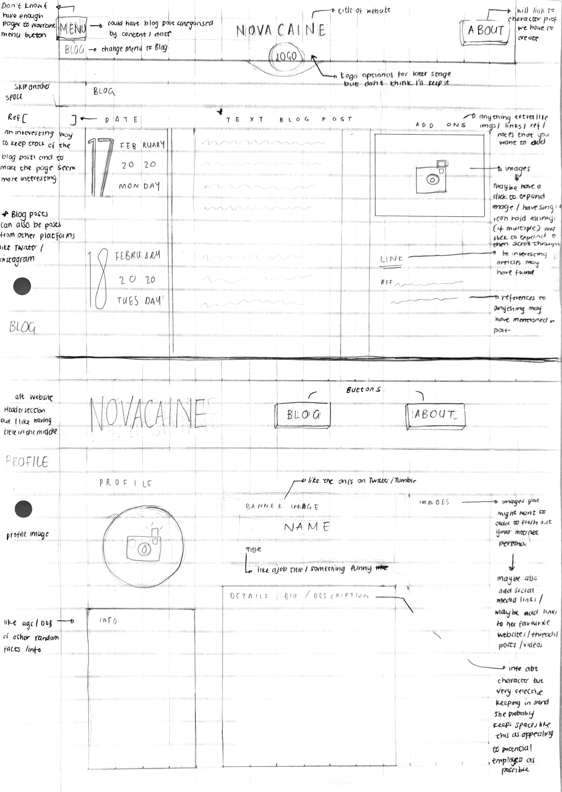

Wireframes
Initial wireframe:

Reworked wirefram:

After revising the wireframe, it was decided to keep the format of the pages more minimalistic to give it a cleaner feel. It also helped me relay the colour scheme as more important aspect of the character rather than the layout of the page.